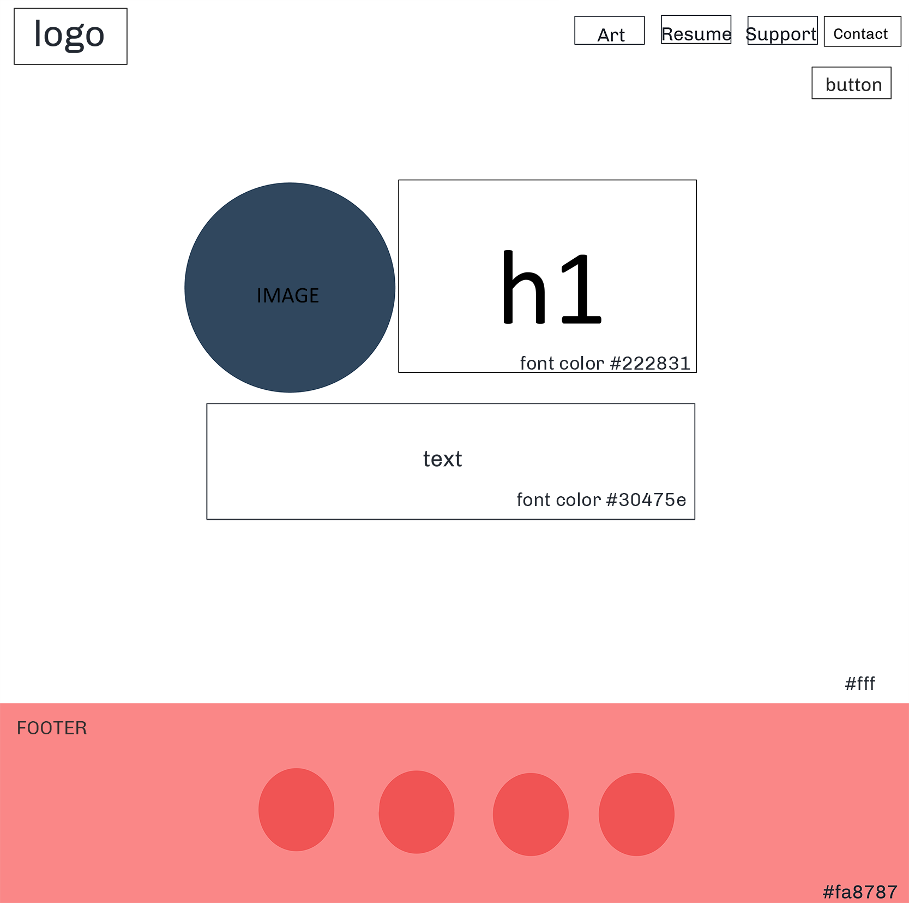
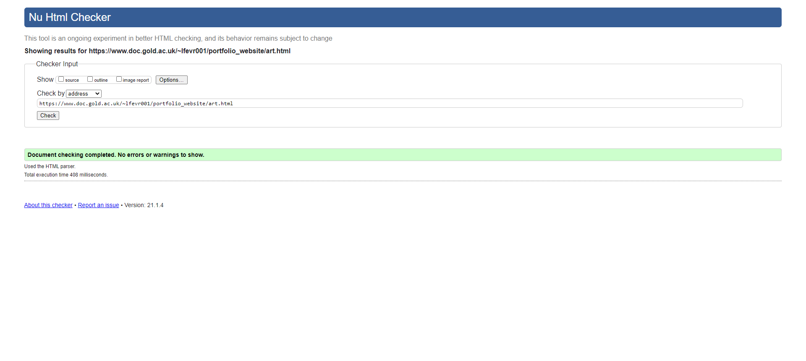

Introduction
How did you approach the subject? What does your site say about future you?
I tried to imagine myself in 10 years by taking what I enjoy the most in University now, and since web development is something that really interest me, I decided to make my future portfolio around that. I wanted to have a simple website with not too many different colours and keep it clean since this is the kind of person I want to be represented as.
Background
Who is your audience?
My audience is people who would hire me for a future job.
- Marines Vasbinder Portfolio
- Damian Watracz Portfolio
- Cole Townsend Portfolio
I like the simplicity of the website as well as the timeline and how it was presented vertically and wanted to do something similar for my own resume. I think her website is clear to the point with her resume and a way to contact her. The animations are smooth and the fonts are clear and big which makes it accessible. There is also some of her projects that we can check out.
His portfolio is once again straight to the point, it shows all the projects he has worked on, the brand he has worked with and all the tools he can use while keeping it clear and simple. We can easily contact him which is important on a portfolio. One thing I would to his website would be some colours other than that I think his website is very pleasant to go through even thought the animations are really simple. He also uses a lot of classes and alt tag for his pictures which is great for the accesability. I really enjoyed the "burger menu" he had and wanted to use that as well on my website when seen on smaller resolution screen such as phones and so on instead of usual navigation bar.
I did not take a lot from this potfolio but it was still going in the direction I was heading too. There was not a lot of animation but I still really liked this website. I do not think you need a hundred of animations and special features to make a nice website. And I thought a portfolio like his was a good goal to go for. I also thought that the little touches of colours made it really nice and that's what I preferred compared to the second portfolio in my list. But his website was a bit less clear than the other ones as for what the purpose of the website was. I think it is a bit lacking in content and it could be a bit clearer as for what the author wants.
Resource on portfolio creation
I looked at different portfolios as well as websites (such as this one) that gave tips on how to a portfolio and so on. I tried to take notes and applied them to my own potfolio and make it my own.
Planning
- I checked if my website was colourblind safe
- I have impleted a dark mode and made it accessible
- I made an easily readable & responsive website
I used a simple colour palette to get inspired with this website. I checked if my palette was coloublind safe through this website so anyone could easily read it.
I thought by implementing a dark mode it would be more accessible because some people prefer to have a darker background so it is easier on the eyes. I learned some basic principles of dark made from this website. I also made sure my website was accessible by using the Lighthouse functionality on Chrome which allows you to generate a report of your website. Here is the report for my index.html
I used bootstrap-grid to make it responsive and made sure to use good font associations (with this website) and checked multiple websites to decide on my font sizes.
How have you made the site easy to navigate?
I used a simple navigation bar with IDs and href as well as a burger menu if the screen resolution is smaller. I also tried to keep my website simple to the eye and not too busy so the person looking at my website would not be confused.
Implementation
Learning
I had to learn how to use advanced CSS in order to create my timeline, I used a website as an example as well as codepen. I found these resources after researching online through different websites that would display all kind of timelines and styles. I used that codepen and changed it to suit to my website. I also learned on skillshare from Aga Naplocha, a creative coder & designer. I followed different courses she made which included small exercises on simple CSS. I also learned how to use a lot of the functionality that bootstrap-grid proposes.
Libraries and other resources
I used bootstrap-grid mostly for my website after learning it and practicing it on small other websites.
Evaluation
What worked well
- I think my website really represents my personality and what kind of person I am which is something that was crucial to me.
- I think my navigation bar that becomes a burger menu was a good idea to make my website more responsive.
- I think that my website is clean and accessible with the dark mode as well as the font sizes which are readable. I also tried to use SVG images for logos and labels which I think is better than PNG images.
What might be improved
- A lot of code that is repeated, like the header and the footer, and could maybe be stored and simply be called by using libraries. My images may also be really heavy and I could probably use smaller resolution images next time.
- I used CSS to make a dark mode for my website but it is probably better to use JS instead because I ended up having a lot of different variables to create my darkmode and for a bigger website it might get a bit heavy and complicated. I could have tried to keep the dark mode through out the website instead of having to select it on every page.
- I think I could have introduced a smooth scrolling animation but I struggled to use event listener with JavaScript so next time I would do more research on that.
References
- N. Wittler, 'CSS Timeline' (), Not found. [Source code]. https://codepen.io/NilsWe/pen/FemfK
- J. Hall, 'Hamburger animation', 2019. [Source code]. https://github.com/codeSTACKr/hamburger-animation
Appendix
Site Map

Wireframes
Low fidelity wireframes
High fidelity wireframes

Validator reports
Main Page
Resume Page
Art Page
LaPetite Page
link to my website: https://www.doc.gold.ac.uk/~lfevr001/FEW_portfolio/index.html